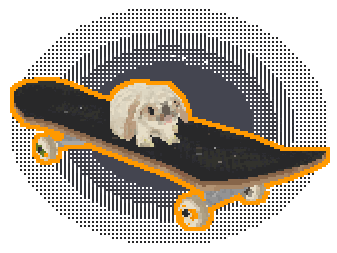
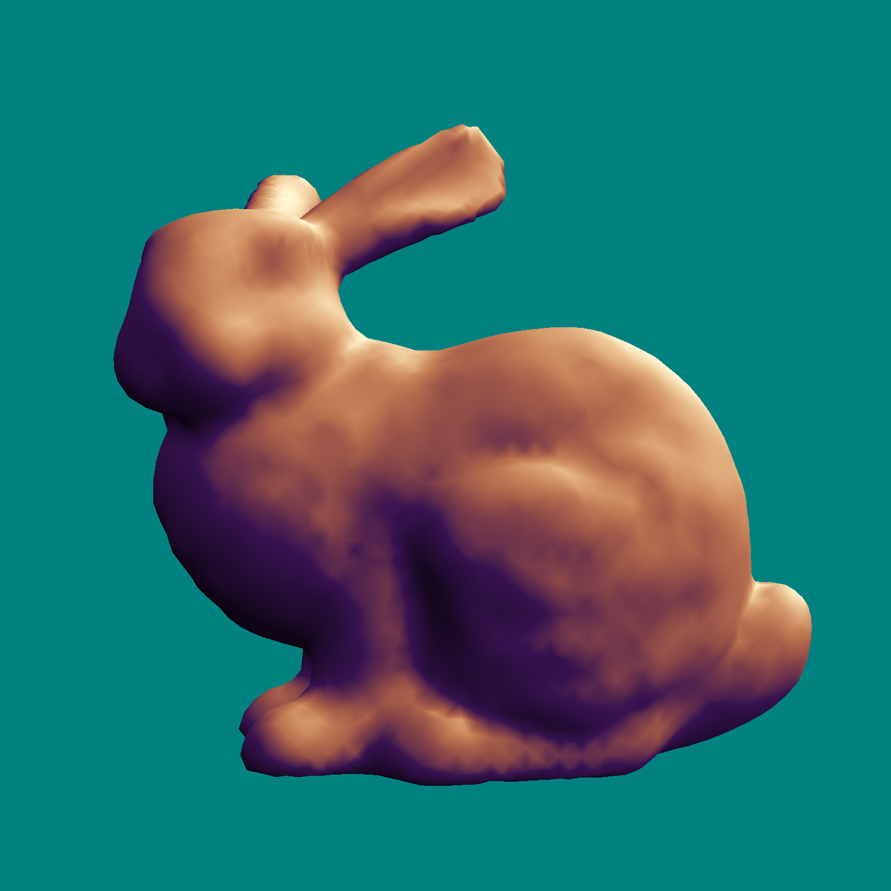
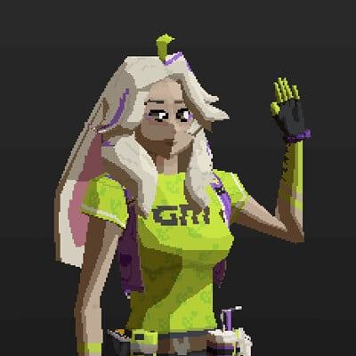
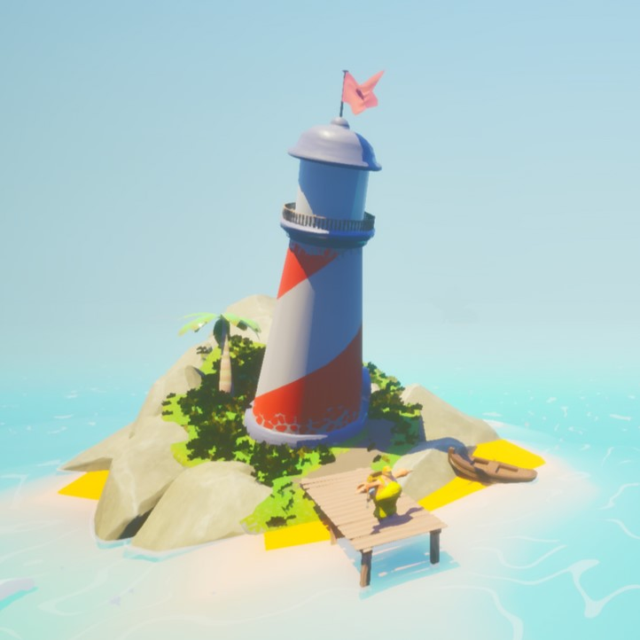
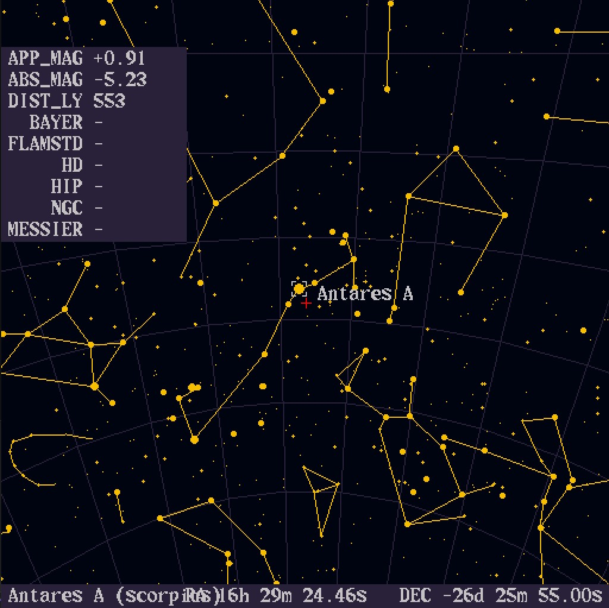
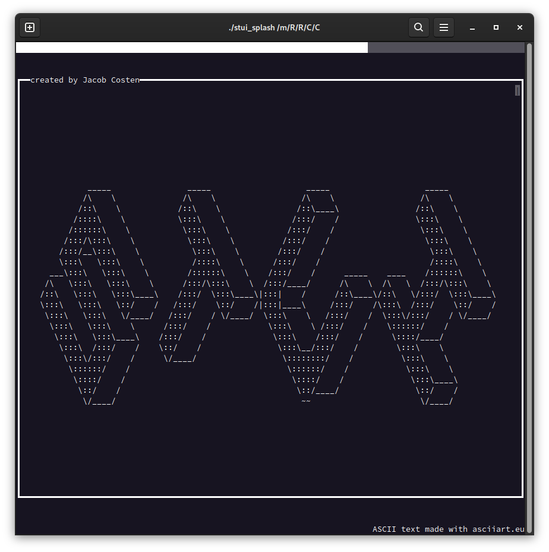
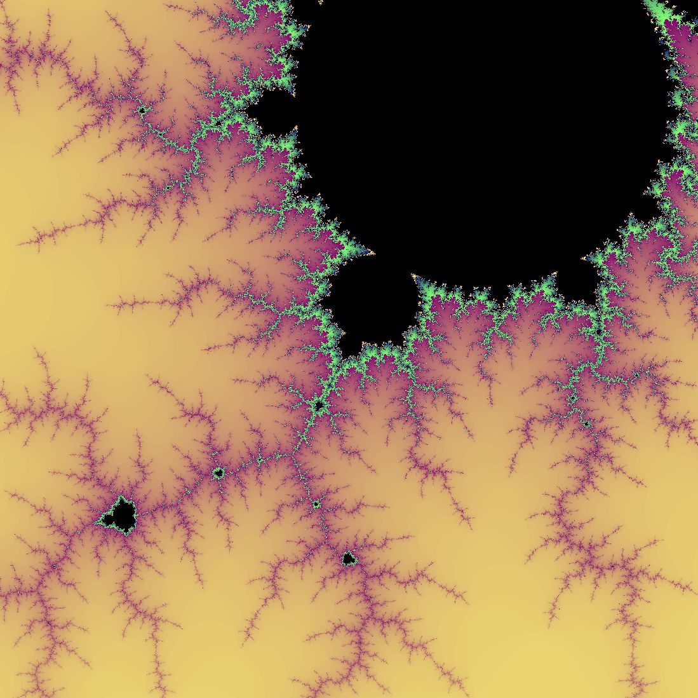

hiya! i'm Cassette Costen, a graphics programmer and technical artist, and digital artist. i studied games programming at Staffordshire University, and i'll soon be starting work at Cast Iron Games.
i'm passionate about a lot of stuff, particularly space, plants, and stylised visuals, so use the links to the right to filter my projects accordingly - a few of my favourites are below!
my current big project is a Vulkan-powered graphics engine, which you can find here, and i recently finished a quick project making a stylised skateboard model and animating my bunny to ride it.

|
 [ dissertation ] ~~ isosurface extraction research ~~ |
 [ Asha (fanart) ] ~~ low-poly pixel-art character ~~ |
|
 [ Rod and Ripple ] ~~ UE5 fishing game group project ~~ |
 [ origami-sunset ] ~~ pure C++ constellation renderer ~~ |
|
 [ STUI ] ~~ interactive text UI toolkit ~~ |
 [ HyperFractal ] ~~ fractal generator written in C++ ~~ |